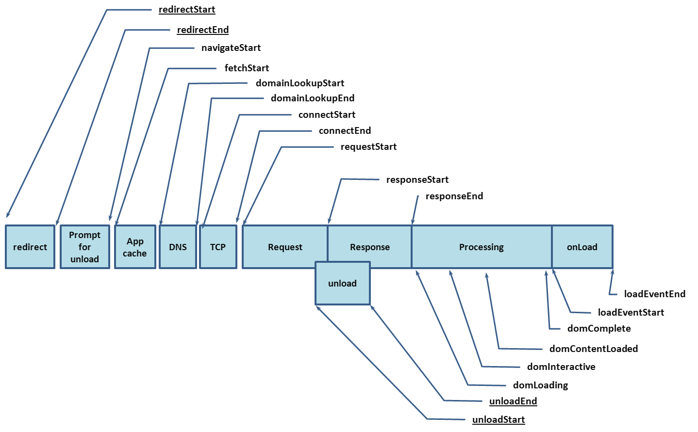

Copyright © 2012 W3C® (MIT, ERCIM, Keio), All Rights Reserved. W3C liability, trademark and document use rules apply.
This specification defines an interface for web applications to access timing information related to navigation and elements.
This section describes the status of this document at the time of its publication. Other documents may supersede this document. A list of current W3C publications and the latest revision of this technical report can be found in the W3C technical reports index at http://www.w3.org/TR/.
This is a work in progress and may change without any notices.
Please send comments to public-web-perf@w3.org (archived) with [NavigationTiming] at the start of the subject line.
This document is produced by the Web Performance Working Group. The Web Performance Working Group is part of the Rich Web Clients Activity in the W3C Interaction Domain.
Publication as a Candidate Recommendation does not imply endorsement by the W3C Membership. This is a draft document and may be updated, replaced or obsoleted by other documents at any time. It is inappropriate to cite this document as other than work in progress.
This document was produced by a group operating under the 5 February 2004 W3C Patent Policy. W3C maintains a public list of any patent disclosures made in connection with the deliverables of the group; that page also includes instructions for disclosing a patent. An individual who has actual knowledge of a patent which the individual believes contains Essential Claim(s) must disclose the information in accordance with section 6 of the W3C Patent Policy.
This section is non-normative.
User latency is an important quality benchmark for Web Applications. While script-based mechanisms, such as the one described in [JSMEASURE], can provide comprehensive instrumentation for user latency measurements within an application, in many cases, they are unable to provide a complete end-to-end latency picture.
For example, the following script shows a naive attempt to measure the time it takes to fully load a page:
<html>
<head>
<script type="text/javascript">
var start = new Date().getTime();
function onLoad() {
var now = new Date().getTime();
var latency = now - start;
alert("page loading time: " + latency);
}
</script>
</head>
<body onload="onLoad()">
<!- Main page body goes from here. -->
</body>
</html>
The script calculates the time it takes to load the page after the first bit of JavaScript in the head is executed, but it does not give any information about the time it takes to get the page from the server.
To address the need for complete information on user experience, this
document introduces the PerformanceTiming
interfaces. This interface
allows JavaScript mechanisms to provide complete client-side latency
measurements within applications. With the proposed interface, the previous
example can be modified to measure a user's perceived page load time.
The following script calculates how much time to load a page since the most recent navigation.
<html>
<head>
<script type="text/javascript">
function onLoad() {
var now = new Date().getTime();
var page_load_time = now - performance.timing.navigationStart;
alert("User-perceived page loading time: " + page_load_time);
}
</script>
</head>
<body onload="onLoad()">
<!- Main page body goes from here. -->
</body>
</html>
The interface provided by this work does not intend to be used as any sort of performance benchmark for user agents.
All diagrams, examples, and notes in this specification are non-normative, as are all sections explicitly marked non-normative. Everything else in this specification is normative.
The key words "MUST", "MUST NOT", "REQUIRED", "SHOULD", "SHOULD NOT", "RECOMMENDED", "MAY", and "OPTIONAL" in the normative parts of this document are to be interpreted as described in RFC 2119. For readability, these words do not appear in all uppercase letters in this specification.
Requirements phrased in the imperative as part of algorithms (such as "strip any leading space characters" or "return false and abort these steps") are to be interpreted with the meaning of the key word ("must", "should", "may", etc) used in introducing the algorithm.
Some conformance requirements are phrased as requirements on attributes, methods or objects. Such requirements are to be interpreted as requirements on user agents.
Conformance requirements phrased as algorithms or specific steps may be implemented in any manner, so long as the end result is equivalent. (In particular, the algorithms defined in this specification are intended to be easy to follow, and not intended to be performant.)
The IDL fragments in this specification must be interpreted as required for conforming IDL fragments, as described in the Web IDL specification. [Web IDL]
The construction "a Foo object", where Foo is actually an interface, is sometimes used instead of
the more accurate "an object implementing the interface Foo".
The term "navigation" refers to the act of navigating.
The term "JavaScript" is used to refer to ECMA-262, rather than the official term ECMAScript, since the term JavaScript is more widely known.
Throughout this work, time is measured in milliseconds since midnight of January 1, 1970 (UTC). Note that the Navigation Timing 2 specification [Navigation Timing 2] allows access to timing information related to navigation using sub-milliseconds resolution instead.
This section is non-normative
This specification introduces an interface that provides Web applications with timing-related information. This specification does not cover how Web applications leverage these interfaces to collect, store and report the provided information.
PerformanceTiming interfaceinterface PerformanceTiming {
readonly attribute unsigned long long navigationStart;
readonly attribute unsigned long long unloadEventStart;
readonly attribute unsigned long long unloadEventEnd;
readonly attribute unsigned long long redirectStart;
readonly attribute unsigned long long redirectEnd;
readonly attribute unsigned long long fetchStart;
readonly attribute unsigned long long domainLookupStart;
readonly attribute unsigned long long domainLookupEnd;
readonly attribute unsigned long long connectStart;
readonly attribute unsigned long long connectEnd;
readonly attribute unsigned long long secureConnectionStart;
readonly attribute unsigned long long requestStart;
readonly attribute unsigned long long responseStart;
readonly attribute unsigned long long responseEnd;
readonly attribute unsigned long long domLoading;
readonly attribute unsigned long long domInteractive;
readonly attribute unsigned long long domContentLoadedEventStart;
readonly attribute unsigned long long domContentLoadedEventEnd;
readonly attribute unsigned long long domComplete;
readonly attribute unsigned long long loadEventStart;
readonly attribute unsigned long long loadEventEnd;
};
navigationStart attributeThis attribute must return the time immediately after the user agent finishes prompting to unload the previous document. If there is no previous document, this attribute must return the same value as fetchStart.
unloadEventStart attributeIf the previous document and the current document have the same origin [IETF RFC 6454], this attribute must return the time immediately before the user agent starts the unload event of the previous document. If there is no previous document or the previous document has a different origin than the current document, this attribute must return zero.
unloadEventEnd attributeIf the previous document and the current document have the same same origin, this attribute must return the time immediately after the user agent finishes the unload event of the previous document. If there is no previous document or the previous document has a different origin than the current document or the unload is not yet completed, this attribute must return zero.
If there are HTTP redirects or equivalent when navigating and not all the redirects or equivalent are from the same origin, both unloadEventStart and unloadEventEnd must return the zero.
redirectStart attribute If there are HTTP redirects or equivalent when navigating and if all the redirects or equivalent are from the same origin, this attribute must return the starting time of the fetch that initiates the redirect. Otherwise, this attribute must return zero.
redirectEnd attribute If there are HTTP redirects or equivalent when navigating and all redirects and equivalents are from the same origin, this attribute must return the time immediately after receiving the last byte of the response of the last redirect. Otherwise, this attribute must return zero.
fetchStart attributeIf the new resource is to be fetched using HTTP GET or equivalent, fetchStart must return the time immediately before the user agent starts checking any relevant application caches. Otherwise, it must return the time when the user agent starts fetching the resource.
domainLookupStart attributeThis attribute must return the time immediately before the user agent starts the domain name lookup for the current document. If a persistent connection [RFC 2616] is used or the current document is retrieved from relevant application caches or local resources, this attribute must return the same value as fetchStart.
domainLookupEnd attributeThis attribute must return the time immediately after the user agent finishes the domain name lookup for the current document. If a persistent connection [RFC 2616] is used or the current document is retrieved from relevant application caches or local resources, this attribute must return the same value as fetchStart.
This section is non-normative.
Checking and retrieving contents from the HTTP cache [RFC 2616] is part of the fetching process. It's covered by the requestStart, responseStart and responseEnd attributes.
In case where the user agent already has the domain information in cache, domainLookupStart and domainLookupEnd represent the times when the user agent starts and ends the domain data retrieval from the cache.
connectStart attributeThis attribute must return the time immediately before the user agent start establishing the connection to the server to retrieve the document. If a persistent connection [RFC 2616] is used or the current document is retrieved from relevant application caches or local resources, this attribute must return value of domainLookupEnd.
connectEnd attribute This attribute must return the time immediately after the user agent finishes establishing the connection to the server to retrieve the current document. If a persistent connection [RFC 2616] is used or the current document is retrieved from relevant application caches or local resources, this attribute must return the value of domainLookupEnd
If the transport connection fails and the user agent reopens a connection, connectStart and connectEnd should return the corresponding values of the new connection.
connectEnd must include the time interval to establish the transport connection as well as other time interval such as SSL handshake and SOCKS authentication.
secureConnectionStart attributeThis attribute is optional. User agents that don't have this attribute available must set it as undefined. When this attribute is available, if the scheme of the current page is HTTPS, this attribute must return the time immediately before the user agent starts the handshake process to secure the current connection. If this attribute is available but HTTPS is not used, this attribute must return zero.
requestStart attributeThis attribute must return the time immediately before the user agent starts requesting the current document from the server, or from relevant application caches or from local resources.
If the transport connection fails after a request is sent and the user agent reopens a connection and resend the request, requestStart should return the corresponding values of the new request.
This interface does not include an attribute to represent the completion of sending the request, e.g., requestEnd.
responseStart attribute This attribute must return the time immediately after the user agent receives the first byte of the response from the server, or from relevant application caches or from local resources.
responseEnd attributeThis attribute must return the time immediately after the user agent receives the last byte of the current document or immediately before the transport connection is closed, whichever comes first. The document here can be received either from the server, relevant application caches or from local resources.
domLoading attributeThis attribute must return the time immediately before the user agent sets the current document readiness to "loading".
domInteractive attributeThis attribute must return the time immediately before the user agent sets the current document readiness to "interactive".
domContentLoadedEventStart attributeThis attribute must return the time immediately before the user agent fires the DOMContentLoaded
event at the Document.
domContentLoadedEventEnd attributeThis attribute must return the time immediately after the document's DOMContentLoaded event completes.
domComplete attributeThis attribute must return the time immediately before the user agent sets the current document readiness to "complete".
If the current document readiness changes to the same state multiple times, domLoading, domInteractive, domContentLoadedEventStart, domContentLoadedEventEnd and domComplete must return the time of the first occurrence of the corresponding document readiness change.
loadEventStart attribute This attribute must return the time immediately before the load event of the current document is fired. It must return zero when the load event is not fired yet.
loadEventEnd attributeThis attribute must return the time when the load event of the current document is completed. It must return zero when the load event is not fired or is not completed.
PerformanceNavigation interfaceinterface PerformanceNavigation {
const unsigned short TYPE_NAVIGATE = 0;
const unsigned short TYPE_RELOAD = 1;
const unsigned short TYPE_BACK_FORWARD = 2;
const unsigned short TYPE_RESERVED = 255;
readonly attribute unsigned short type;
readonly attribute unsigned short redirectCount;
};
type attributeThis attribute must return the type of the last non-redirect navigation in the current browsing context. It must have one of the following navigation type values.
Navigation started by clicking on a link, or entering the URL in the user agent's address bar, or form submission, or initializing through a script operation other than the ones used by TYPE_RELOAD and TYPE_BACK_FORWARD as listed below.
Navigation through the reload operation or the location.reload() method.
Navigation through a history traversal operation.
Any navigation types not defined by values above.
Client-side redirects, such as those using the Refresh pragma directive, are not considered HTTP redirects or equivalent by this spec. In those cases, the type attribute should return appropriate value, such as TYPE_RELOAD if reloading the current page, or TYPE_NAVIGATE if navigating to a new URL.
redirectCount attribute This attribute must return the number of redirects since the last non-redirect navigation under the current browsing context. If there is no redirect or there is any redirect that is not from the same origin as the destination document, this attribute must return zero.
window.performance
attributeThe HTML5 specification defines a Window interface [HTML5], which this specification extends.
interface Performance {
readonly attribute PerformanceTiming timing;
readonly attribute PerformanceNavigation navigation;
};
partial interface Window {
[Replaceable] readonly attribute Performance performance;
};
The window.performance attribute provides a hosting area for performance related attributes.
timing attribute
The timing attribute
represents the timing information related to the browsing contexts since the
last non-redirect navigation. This attribute is defined by the PerformanceTiming interface.
navigation attribute
The navigation attribute is defined by the PerformanceNavigation interface.
All the attributes in window.performance.timing and window.performance.navigation should not be written to until the Window object of the current document is created, even though their attributes are referred to in the following steps to facilitate description.
User agents may provide users the option of disabling the window.performance.timing and window.performance.navigation interfaces. When these interfaces are disabled, both window.performance.timing and window.performance.navigation must return a null value.
A user agent may maintain instances of the PerformanceTiming and PerformanceNavigation interfaces until the Window object associated with the current document is created, when window.performance.timing and window.performance.navigation are replaced with these instances.
This section is non-normative.
The following graph illustrates the timing attributes defined by the
PerformanceTiming interface and the
PerformanceNavigation interface
with or without redirect, respectively. Attributes underlined may not be
available in navigation involving documents from different
origins. User
agents may perform internal processing in between timings, which allow for
non-normative intervals between timings.

Return to step 11 if the user agent fails to send the request or receive the entire response, and needs to reopen the connection.
When persistent connection [RFC 2616] is enabled, a user agent may first try to re-use an open connect to send the request while the connection can be asynchronously closed. In such case, connectStart, connectEnd and requestStart should represent timing information collected over the re-open connection.
There are implied strong references from the window object to its window.performance.timing and window.performance.navigation objects.
The value of the timing attributes must monotonically increase to ensure timing attributes are not skewed by adjustments to the system clock during the navigation. The difference between any two chronologically recorded timing attributes must never be negative. For all navigations, including subdocument navigations, the user agent must record the system clock at the beginning of the root document navigation and define subsequent timing attributes in terms of a monotonic clock measuring time elapsed from the beginning of the navigation.
Vendor-specific proprietary user agent extensions are discouraged. If such extensions are needed, e.g., for experimental purposes, vendors must use the following extension mechanisms:
This section is non-normative.
There is the potential for disclosing an end-user's browsing and activity history by using carefully crafted timing attacks. For instance, the unloading time reveals how long the previous page takes to execute its unload handler, which could be used to infer the user's login status. These attacks have been mitigated by enforcing the same origin policy when timing information involving the previous navigation is accessed.
The relaxed same origin policy doesn't provide sufficient protection against unauthorized visits across documents. In shared hosting, an untrusted third party is able to host an HTTP server at the same IP address but on a different port.
Different pages sharing one host name, for example contents from different authors hosted on sites with user generated content are considered from the same origin because there is no feature to restrict the access by pathname. Navigating between these pages allows a latter page to access timing information of the previous one, such as timing regarding redirection and unload event.
This section is non-normative.
In case a proxy is deployed between the user agent and the web server, the time interval between the connectStart and the connectEnd attributes indicates the delay between the user agent and the proxy instead of the web server. With that, web server can potentially infer the existence of the proxy. For SOCKS proxy, this time interval includes the proxy authentication time and time the proxy takes to connect to the web server, which obfuscate the proxy detection. In case of an HTTP proxy, the user agent might not have any knowledge about the proxy server at all so it's not always feasible to mitigate this attack.
The window.performance object is replaceable to avoid conflicts with existing pages using the same object. By doing that, it is possible for third-party to replace the object and scripts relying on the interface described in this work would break.
I would like to offer my sincere thanks to all the people that I have been in touch with regarding this draft, including Anderson Quach, Alex Russell, Alois Reitbauer, Annie Sullivan, Christian Biesinger, Darin Fisher, Eric Lawrence, James Simonsen, Jatinder Mann, Jason Sobel, Jason Weber, Jonas Sicking, Kyle Scholz, Lenny Rachitsky, Nic Jansma, Richard Rabbat, Sergey Novikov, Sigbj�rn Vik, Steve Souders, Tony Gentilcore for their reviews and feedback.